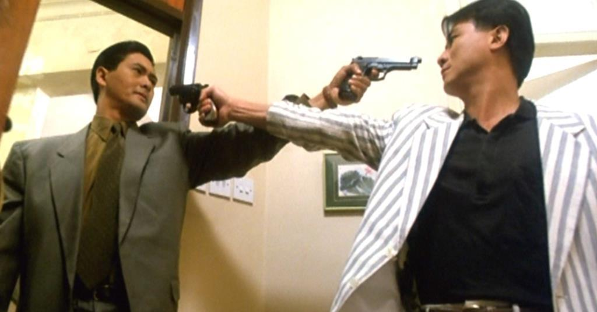

Genre Drama / Comedy Runtime 2h 12m RATING
The other members of the poor Kim family see an opportunity when their son starts working for the rich Park family. Soon, they find ways to work within the same household and live a parasitic life.
Genre Action / Fantasy Runtime 2h 13m RATING
In the 14th century, the harmony that humans, animals and gods have enjoyed begins to crumble. The protagonist, young Ashitaka - infected by an animal attack, seeks a cure from the deer-like god Shishigami. In his travels, he sees humans ravaging the earth, bringing down the wrath of wolf god Moro and his human companion Princess Mononoke. Hiskattempts to broker peace between her and the humans brings only conflict.

Genre Action / Fantasy Runtime 1h 44m RATING
Mob assassin Jeffrey (Chow Yun-Fat) is no ordinary hired gun; the best in his business, he views his chosen profession as a calling rather than simply a job. So, when beautiful nightclub chanteuse Jennie (Sally Yeh) is blinded in the crossfire of his most recent hit, Jeffrey chooses to retire after one last job to pay for his unintended victim's sight-restoring operation. But when Jeffrey is double-crossed, he reluctantly joins forces with a rogue policeman (Danny Lee) to make things right.